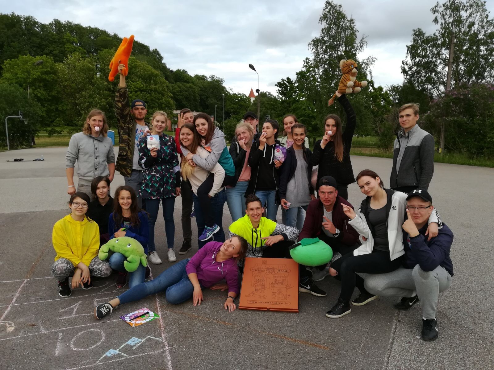
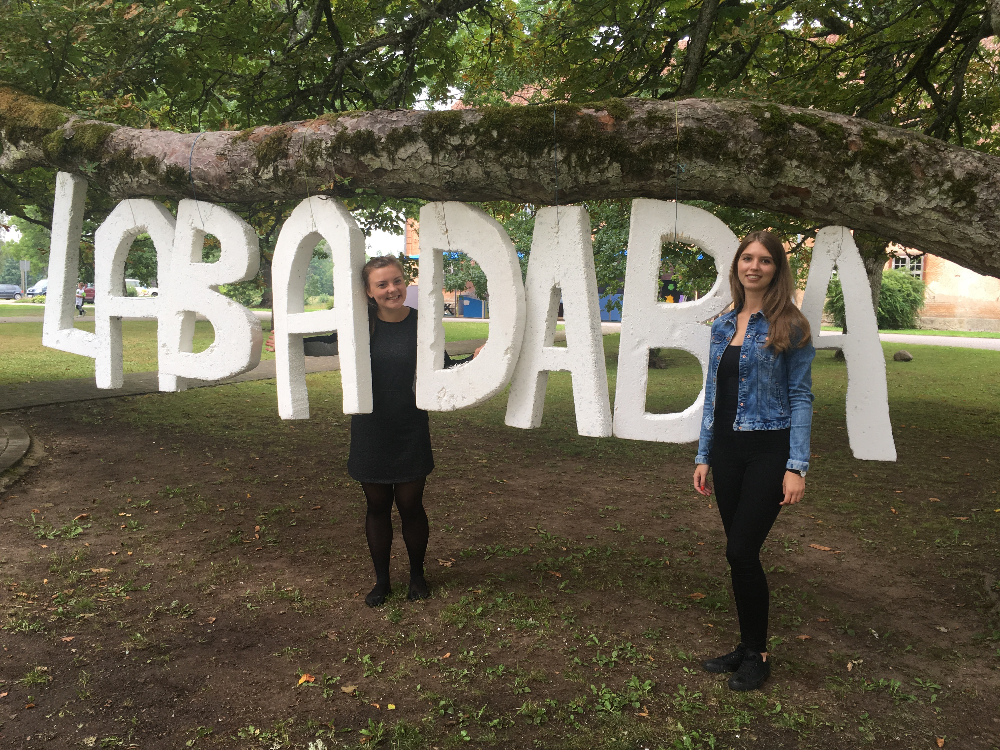

Project Management
Since age of 14 I have been involved in youth work activities. Started off as a membor of youth group, I used many opportunities to volunteer, participate in competitions and organise events. These are examples of three of the mains projects that I have organised.
Go to the countryside!

The main idea of the project was to bring people from cities to countrside to experience nature in more personal level. In order to organise this project, I had to apply and receive financial support from initiative competiotion, form a team, find places that we could visit, and plan the whole program. In addition, I was made informative materials to find participant and a report afterwards.
To watch a video from the project click here (5.44-9.54)
Real life circus
This project was organised within the ledership programm "Go Beyond". During the project me and my team designed outdoor activities that are inspired by the boardgame "Circus". The aim for the project was to provide active free time activities for youngster during their summer holidays.
To watch a video from the project click here
Top 10 future skills
This project was based on finding about the TOP 10 skills that employers will look for in their employees in 2020. The project aimed to raise awareness about these skills among pupils who haven't heard muvh about these skills in their academic classes. As a guest speakers, we lead workshops in 2 camps and organise roundtable discussion with experts in their field.
Design
One of my passions is creating designs. Although I am still in the beginner stage, I hope to continue to develop my skills in the future. I enjoy creating visual materials that woudl convey information in a simple and engaging way.
Host
Being in the front line is something that I truly enjoy. For many times I have had an opportunities to hoste events, write scripts, and lead a teambuilfing activities. An interest in public speaking comes from participation in impo theatre as well as from public speaking competiotions.